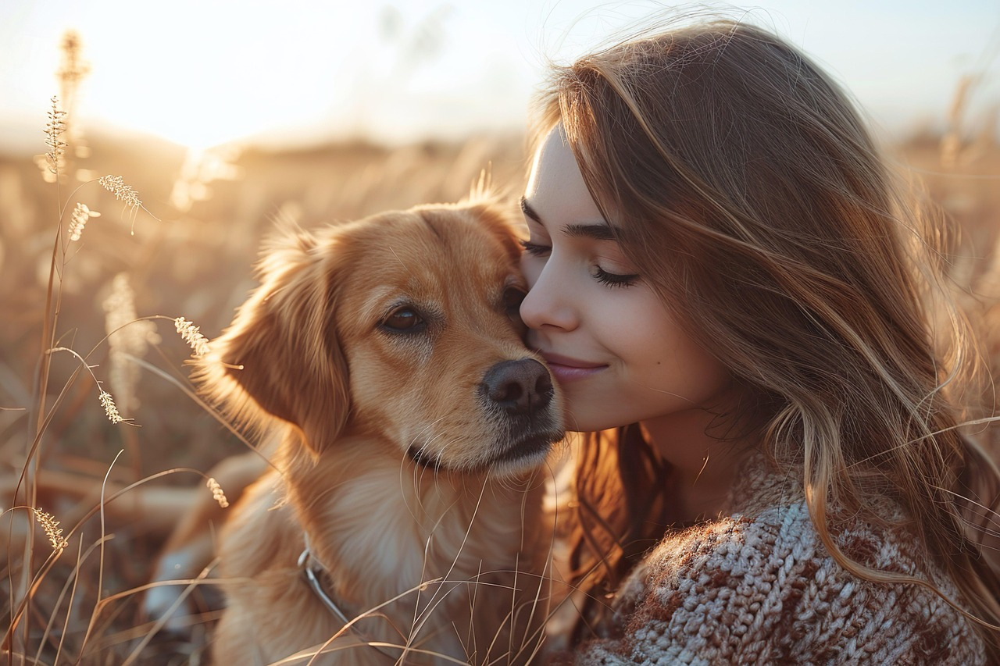
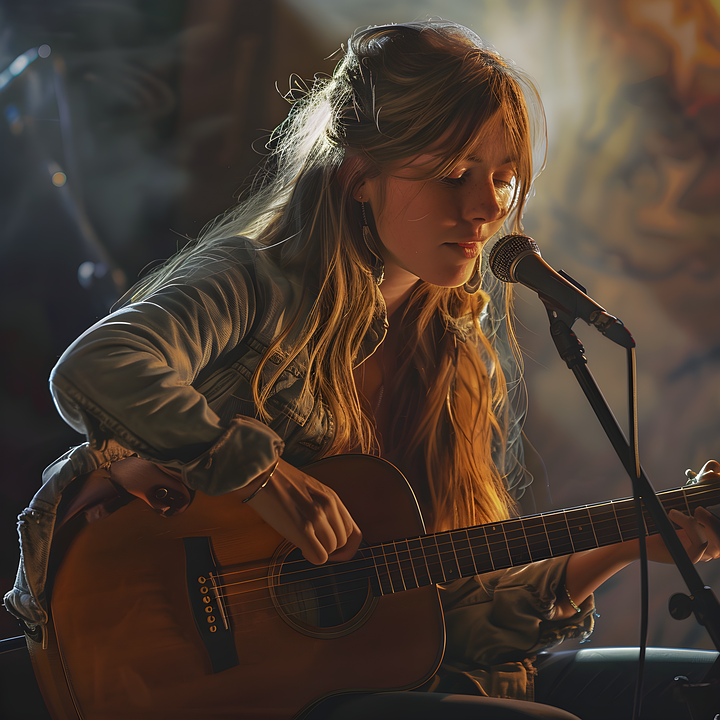
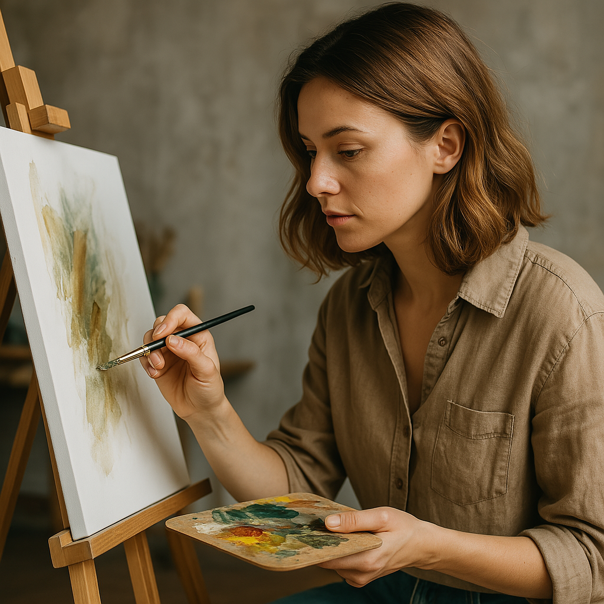

💡 Tu afinidad con mis pasiones
Curiosa por naturaleza. Me encanta entender cómo funciona lo que uso cada día.

Mi compañero de cuatro patas me recuerda lo importante: disfrutar del ahora.

Mi espíritu animal cuando encuentro un bug que nadie más ve.

La música me equilibra. Cantar es una forma de resetear la mente.

Creatividad sin teclado: pintar es mi otra forma de buscar detalle y armonía.
El combustible oficial de una buena sesión de testing.